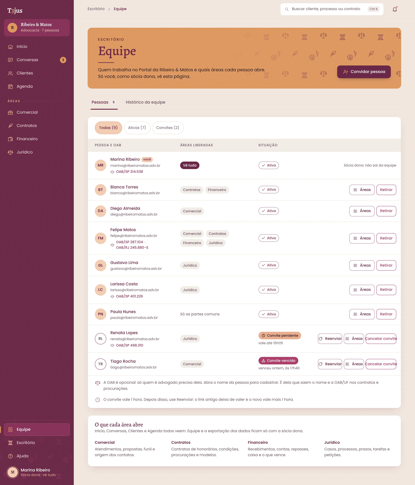

Lista da equipe com a OAB
A lista aprovada, com a OAB embaixo do nome (Felipe tem duas). Quem não tem OAB não ganha nada: secretária e financeiro não ficam marcados como pendentes. O nome leva à ficha da pessoa.
Abrir: equipe.html?estado=ver (estreite a janela para ver o celular)